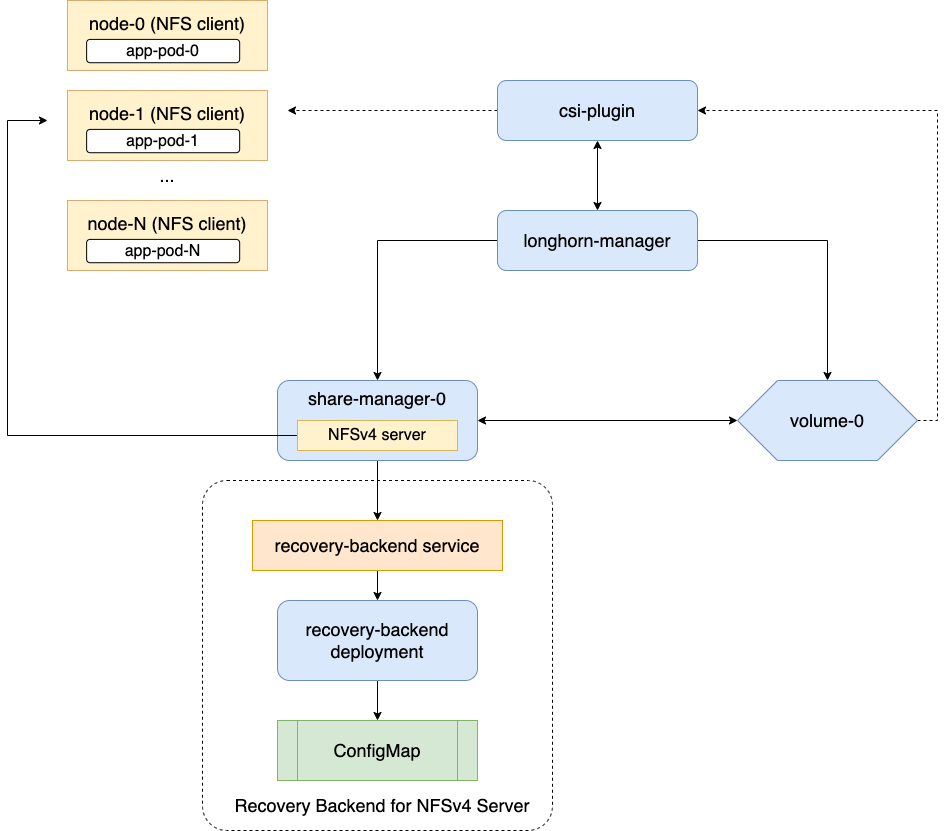

|
Este documento foi traduzido usando tecnologia de tradução automática de máquina. Sempre trabalhamos para apresentar traduções precisas, mas não oferecemos nenhuma garantia em relação à integridade, precisão ou confiabilidade do conteúdo traduzido. Em caso de qualquer discrepância, a versão original em inglês prevalecerá e constituirá o texto official. |
|
Esta é uma documentação não divulgada para SUSE® Storage 1.12 (Dev). |
ReadWriteMany (RWX) Volumes
SUSE Storage suporta volumes ReadWriteMany (RWX) expondo volumes Longhorn regulares através de servidores NFSv4 que residem em pods de gerenciador de compartilhamento.
Introdução
SUSE Storage fornece dois tipos de volumes RWX, cada um otimizado para diferentes requisitos de carga de trabalho:
Volumes RWX Genéricos (Não Migráveis)
Volumes RWX genéricos fornecem acesso a um sistema de arquivos compartilhado entre vários nós. Eles utilizam servidores NFSv4.1 dedicados que operam em share-manager-<volume-name> Pods dentro do namespace longhorn-system. Cada volume RWX é emparelhado com um Serviço correspondente que expõe o endpoint NFS para os clientes.
Esses volumes são ideais para cargas de trabalho que necessitam de acesso simultâneo a arquivos, mas não suportam migração ao vivo. A migração ao vivo é o processo de mover uma carga de trabalho em execução de um host de origem para um host de destino sem interrupção do serviço. Durante a migração, os volumes são acessíveis apenas a partir da carga de trabalho de origem. Uma vez concluído, a carga de trabalho de destino assume o acesso, e a carga de trabalho de origem é encerrada.
Características
-
Não capaz de migração ao vivo.
-
Use NFSv4.1 para compartilhamento baseado em sistema de arquivos.
-
Adequado para armazenamento compartilhado geral e cargas de trabalho de acesso a arquivos em múltiplos nós.

|
Aviso: Atualizações diferidas da imagem do pod do gerenciador de compartilhamento em volumes RWX ativos Após uma atualização do sistema Longhorn, quando um volume RWX Genérico (Não Migrável) permanece anexado, as modificações no |
Volumes RWX migráveis
Volumes RWX migráveis são projetados especificamente para cargas de trabalho virtualizadas, como VMs do KubeVirt, que requerem [migração ao vivo](https://kubevirt.io/user-guide/compute/live_migration/) enquanto mantêm operações de E/S em andamento. Esses volumes permitem a movimentação contínua de VMs entre nós durante operações de manutenção, failover ou reequilíbrio sem interrupção do serviço.
Características
-
Projetados para cenários de migração ao vivo.
-
Requer
volumeMode: Block(o modoFilesystemnão é suportado). -
Requer modo de acesso ReadWriteMany e uma StorageClass com
migratable: "true"(que definevolume.spec.migratable=trueno volume Longhorn). -
Não é destinado a cargas de trabalho de sistema de arquivos compartilhados em geral.
|
Você pode distinguir volumes RWX migráveis verificando o campo |
Requisitos para Volumes RWX Genéricos (Não Migráveis)
-
Cada nó cliente NFS precisa ter um cliente NFSv4 instalado.
Por favor, consulte Instalando o cliente NFSv4 para mais detalhes sobre a instalação.
Solução de problemas:Se o cliente NFSv4 não estiver disponível no nó, tentar montar o volume resulta em uma mensagem de erro que inclui o seguinte texto:
for several filesystems (e.g. nfs, cifs) you might need a /sbin/mount.<type> helper program.
-
O nome do host de cada nó é único no cluster Kubernetes.
Há um serviço de recuperação dedicado para servidores NFS no sistema Longhorn. Quando um cliente se conecta a um servidor NFS, as informações do cliente, incluindo seu nome de host, serão armazenadas no backend de recuperação. Quando um Pod gerenciador de compartilhamento ou servidor NFS é encerrado de forma anormal, SUSE Storage criará um novo. Dentro do período extra de 90 segundos, os clientes recuperarão os bloqueios usando as informações do cliente armazenadas no backend de recuperação.
Criação e Uso de Volumes RWX Genéricos (Não Migráveis)
|
Um volume RWX deve ter o modo de acesso definido como |
-
Para volumes Longhorn provisionados dinamicamente, o modo de acesso é baseado no modo de acesso do PVC.
-
Para volumes Longhorn criados manualmente (restauração, volume de DR), o modo de acesso pode ser especificado durante a criação na interface SUSE Storage.
-
Ao criar um PV/PVC para um volume Longhorn através da interface, o modo de acesso do PV/PVC será baseado no modo de acesso do volume.
-
É possível alterar o modo de acesso do volume Longhorn através da interface se o volume não estiver vinculado a um PVC.
-
Para um volume Longhorn que é utilizado por um PVC RWX, o modo de acesso do volume será alterado para RWX.
Configurando a Localidade do Volume para Volumes RWX Genéricos (Não Migráveis)
SUSE Storage fornece novas configurações que permitem controlar precisamente a localidade dos dados dos volumes RWX (através da identificação dos pods do Share Manager associados). Essas configurações granulares funcionam com configurações globais relacionadas para fornecer desempenho ideal, resiliência e conformidade com políticas ou restrições organizacionais.
shareManagerNodeSelector
Você pode usar o parâmetro StorageClass shareManagerNodeSelector para especificar seletores para identificar os nós nos quais os volumes RWX podem ser agendados. Esses seletores são mesclados com as configurações globais system-managed-components-node-selector e, em seguida, aplicados aos pods do Share Manager dos volumes RWX para fornecer mais controle sobre a localidade do volume.
Exemplo:
kind: StorageClass
apiVersion: storage.k8s.io/v1
metadata:
name: longhorn-rwx
provisioner: driver.longhorn.io
parameters:
shareManagerNodeSelector: label-key1:label-value1;label-key2:label-value2
Neste exemplo, os volumes RWX provisionados com a StorageClass especificada serão agendados em nós com os rótulos label-key1:label-value1 e label-key2:label-value2.
allowedTopologies
O Longhorn converte as configurações storageClass.allowedTopologies em regras de afinidade para os pods do Share Manager dos volumes RWX. Isso garante que os pods sejam agendados em nós que atendem aos requisitos topológicos especificados (como regiões e zonas) e que estejam alinhados com a localidade do volume RWX.
Exemplo:
kind: StorageClass
apiVersion: storage.k8s.io/v1
metadata:
name: longhorn-rwx
provisioner: driver.longhorn.io
allowedTopologies:
- matchLabelExpressions:
- key: topology.kubernetes.io/region
values:
- us-west-1
Neste exemplo, os pods do Share Manager e os volumes RWX serão agendados na região us-west-1.
shareManagerTolerations
Você também pode usar o parâmetro StorageClass shareManagerTolerations para permitir um agendamento mais flexível com base nos taints dos nós. As tolerâncias definidas são mescladas com as configurações globais taint-toleration e, em seguida, aplicadas aos pods do Share Manager.
Exemplo:
kind: StorageClass
apiVersion: storage.k8s.io/v1
metadata:
name: longhorn-rwx
provisioner: driver.longhorn.io
parameters:
shareManagerTolerations: nodetype=storage:NoSchedule
Neste exemplo, os pods do Share Manager tolerarão o taint nodetype=storage:NoSchedule nos nós, permitindo que sejam agendados nesses nós.
Configurando Opções de Montagem de Volume para Volumes RWX Genéricos (Não Migráveis)
Um volume RWX é acessível apenas quando montado via NFS. Por padrão, SUSE Storage utiliza a versão 4.1 do NFS com a opção de montagem softerr, um valor timeo de "600" e um valor retrans de "5".
Se o servidor NFS se tornar inacessível, as solicitações dos clientes NFS são re-tentadas de acordo com o valor retrans configurado. Eventos de longa duração, como quedas de energia e fatores como partições de rede, fazem com que as solicitações eventualmente falhem. Um erro de NFS (ETIMEDOUT para a opção de montagem softerr) é retornado para a aplicação chamadora e pode ocorrer perda de dados. Se softerr não for suportado, SUSE Storage utiliza automaticamente a opção de montagem soft em vez disso, que retorna um EIO como erro.
Você pode usar opções de montagem específicas para novos volumes. Primeiro, crie uma StorageClass personalizada com um parâmetro nfsOptions, e então crie PVCs para volumes RWX usando essa StorageClass específica.
Exemplo:
kind: StorageClass
apiVersion: storage.k8s.io/v1
metadata:
name: longhorn-test
provisioner: driver.longhorn.io
allowVolumeExpansion: true
reclaimPolicy: Delete
volumeBindingMode: Immediate
parameters:
numberOfReplicas: "3"
staleReplicaTimeout: "2880"
fromBackup: ""
fsType: "ext4"
nfsOptions: "vers=4.2,noresvport,softerr,timeo=600,retrans=5"|
Para criar PVCs para volumes RWX usando a StorageClass de exemplo, substitua a string |
Notes
-
Você deve fornecer o conjunto completo de opções desejadas. Quaisquer opções não fornecidas usarão os padrões do lado do servidor NFS, não os próprios de SUSE Storage.
-
SUSE Storage não valida a string
nfsOptions, portanto, valores errôneos e erros tipográficos não são sinalizados. Quando a string é inválida, a montagem é rejeitada pelo servidor NFS e o volume não é criado nem anexado. -
Na versão SUSE Storage v1.4.0 a 1.4.3 e v1.5.0 a v1.5.1, volumes dentro de um pod gerenciador de compartilhamento (especificamente, na etapa
NodeStageVolume) são montados de forma rígida por padrão pelo plugin Longhorn CSI. A montagem rígida permite que SUSE Storage tente persistentemente enviar solicitações NFS, garantindo que as operações de I/O não falhem mesmo quando o servidor NFS se torna inacessível por algum tempo. As operações de I/O retomam sem problemas quando o servidor recupera a conectividade ou um servidor substituto é criado.Esse mecanismo para garantir a integridade dos dados, no entanto, vem com algum risco. Para manter a estabilidade, o kernel Linux não permite a desmontagem de um sistema de arquivos até que todas as operações de I/O pendentes sejam concluídas. Isso é uma preocupação porque o sistema não pode ser desligado até que todos os sistemas de arquivos sejam desmontados. Se o servidor NFS não conseguir se recuperar, os nós clientes devem passar por um reinício forçado.
Para mitigar o problema, faça upgrade para a versão v1.4.4, v1.5.2 ou uma versão posterior. Após a atualização,
softerrousofté aplicado automaticamente ao parâmetronfsOptionssempre que volumes RWX são reanexados (se as configurações padrão não forem substituídas). -
Você ainda pode usar a opção de montagem
hard(via o mecanismo de substituiçãonfsOptions), mas volumes montados de forma rígida estão sujeitos aos riscos descritos.
Para obter mais informações, consulte #6655.
Tratamento de Falhas para Volumes RWX Genéricos (Não Migráveis)
-
O Pod share-manager é finalizado de forma anormal
A IO do cliente será bloqueada até que SUSE Storage crie um novo Pod share-manager e o volume associado. Uma vez que o Pod é criado com sucesso, o período extra de 90 segundos para recuperação de bloqueio é iniciado, e os usuários esperariam
-
Antes que o período extra termine, a IO do cliente para o volume RWX ainda estará bloqueada.
-
O servidor rejeita operações de LEITURA e GRAVAÇÃO e solicitações de bloqueio não recuperáveis com um erro de NFS4ERR_GRACE.
-
O período extra pode ser encerrado antecipadamente se todos os bloqueios forem recuperados com sucesso.
Após sair do período extra, as IOs dos clientes que recuperaram os bloqueios com sucesso continuam sem erros de identificador de arquivo obsoleto ou erros de IO. Se um bloqueio não puder ser recuperado dentro do período extra, o bloqueio é descartado, e o servidor retorna um erro de IO ao cliente. O cliente restabelece um novo bloqueio. O aplicativo deve tratar o erro de IO. No entanto, nem todos os aplicativos podem lidar com erros de IO devido à sua implementação. Assim, isso pode resultar na falha da operação de IO e na perda de dados. A consistência dos dados pode ser um problema.
+ Aqui está um exemplo de um DaemonSet usando um volume RWX.
+ Cada Pod do DaemonSet está gravando dados no volume RWX. Se o nó onde o Pod share-manager está em execução sofrer uma falha, um novo Pod share-manager será criado em outro nó. Como um dos clientes localizados no nó com falha não está mais disponível, o processo de recuperação de bloqueio não pode ser encerrado antes do período extra de 90 segundos, mesmo que os bloqueios dos clientes restantes tenham sido recuperados com sucesso. As IOs desses clientes continuam após o término do período extra.
-
-
Se o serviço DNS do Kubernetes sofrer uma falha, os Pods share-manager não poderão se comunicar com o longhorn-nfs-recovery-backend.
O servidor NFS-ganesha em um Pod share-manager se comunica com
longhorn-nfs-recovery-backendvia o IP do serviçolonghorn-recovery-backend. Se o serviço DNS estiver com falha, a criação e exclusão de volumes RWX, bem como a recuperação de servidores NFS, estarão inoperantes. Assim, a alta disponibilidade do serviço DNS é recomendada para evitar a falha de comunicação. -
Recurso de failover rápido.
SUSE Storage suporta um recurso que pode melhorar a disponibilidade ao encurtar o tempo necessário para se recuperar de uma falha do nó em que o Pod do servidor NFS do share-manager do volume está em execução. O recurso utiliza um heartbeat direto para monitorar o servidor. Se o servidor não responder, ele age para criar um novo mais rapidamente do que a sequência usual. Ele também configura o servidor NFS de forma diferente, para encurtar o período extra de recuperação de 90 para 30 segundos.
Mais detalhes estão em RWX Volume Fast Failover.
Migração do Provedor Externo Anterior.
O PVC abaixo cria um job do Kubernetes que pode copiar dados de um volume para outro.
-
Substitua o
data-source-pvcpelo nome do PVC NFSv4 RWX anterior que foi criado pelo Kubernetes. -
Substitua o
data-target-pvcpelo nome do novo PVC RWX que você deseja usar para suas novas cargas de trabalho.
Você pode criar manualmente um novo volume RWX Longhorn + PVC/PV, ou apenas criar um PVC RWX e então fazer com que o Longhorn provisione dinamicamente um volume para você.
Ambos os PVCs precisam existir no mesmo namespace. Se você estiver usando um namespace diferente do padrão, altere o namespace do trabalho abaixo.
apiVersion: batch/v1
kind: Job
metadata:
namespace: default # namespace where the PVC's exist
name: volume-migration
spec:
completions: 1
parallelism: 1
backoffLimit: 3
template:
metadata:
name: volume-migration
labels:
name: volume-migration
spec:
restartPolicy: Never
containers:
- name: volume-migration
image: ubuntu:xenial
tty: true
command: [ "/bin/sh" ]
args: [ "-c", "cp -r -v /mnt/old /mnt/new" ]
volumeMounts:
- name: old-vol
mountPath: /mnt/old
- name: new-vol
mountPath: /mnt/new
volumes:
- name: old-vol
persistentVolumeClaim:
claimName: data-source-pvc # change to data source PVC
- name: new-vol
persistentVolumeClaim:
claimName: data-target-pvc # change to data target PVC